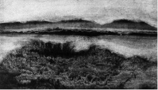
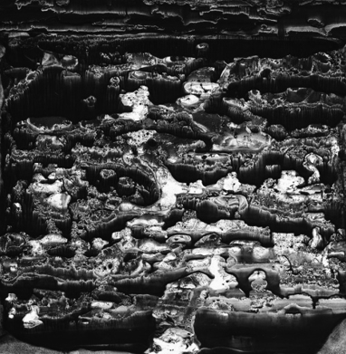

私人曙光
与木心文学相比，他的山水画好像出自另一个人的手，呈现了不同的景观，冷寂下来，孤绝起来了。如果说木心的文学是有对象的，是与读者、朋友的对谈聊天，他的山水画便是无对象的，有种私人性，像是他的独处。
也许这只是我个人的感觉。二十多年前在纽约第一次看到他的画时，印象并非如此。那时题材要多，还有抽象的，形态多变，可以看到林风眠、塞尚、八大山人的影子，我觉得那时的木心还没有形成自己的面貌，有些也显得过时了。后来见到他五十岁生日画的“五十幅作品系列”（在美巡回展出的是三十三幅），才发现了某种特别的东西，现在想来，就是他晚年山水系列的“前奏曲”吧。“系列”二字不出于木心，是我加的。我发现一个有意思的现象，就是这个“前奏曲”与他同期别的题材的画比起来，风貌早熟，三十年来延绵不断，终于晚成，我想说的是这些画。
持久、莫名地被某种事物吸引，耽迷其中而难以释怀，这种经验我们并不陌生。从时间上算，他五十岁生日所制的那些画的时间是七七年，更早些的“黑山水”有没有？目前尚未发现。木心向来轻视作品生成的轨迹和缘由，草图草稿之类，常随手毁掉，他曾一时兴起，将自己的一本仿古词集扔进炭火烧掉，画的存留，想必也难逃相似的命运。嗜求完美的“洁癖”使他刻意抹去或淡化作品的孕生轨迹，以使作品纯然卓立。他曾提及米开朗基罗毁掉自己次品的记载，对此由衷佩服，说“那是要有勇气的呀”！这样一来，对他早期作品的“探源”求证必定落空。今已如此，后何以堪？这是木心绘画史料文献的残缺处，怎么办？只好翻找一下他早期的文字，看看那时文学里的木心是怎样的，有什么踪迹可寻。木心在《《海峡传声》里提到他十四岁时在故乡乌镇写的诗，此录两首：
时间是铅笔
在我心版上写许多字
时间是橡皮
把字楷去了
那拿铅笔又拿橡皮的手
是谁的手？
谁的手
--
天空有一堆
无人游戏的玩具
于是只好
自己游戏着
在游戏着
在被游戏着
再看六十几岁的木心在纽约写的《“梵高在阿尔”观后》：
…
但见枯草地上
狼狗逐松鼠
松鼠没命地爬上树
上帝之德 历历可指
（狼狗转身追鸽子
鸽子扑翅飞起
上帝之德
真是历历可指）
狗在草地上
松鼠在树上
鸽子在空中
梵高在博物馆里
我在路上走
不是画画，“底色”已有，五十多年的“时差”也没改变这些文字的心智特点，它们仍旧像同一双眼睛看着两个时空里的世界。阅历深浅，经验多寡，都了无痕迹，也不重要了，唯独那个“目光”在字里行间闪烁，不可思议。“先验”？“超验”？姑且绕开不说。
在另一篇文章里，他提及自己在绘画上与别人审美的不同。那是《战后嘉年华》，写于上世纪末的回忆性文章，追记了他在上海美专的某些往事。当时木心二十出头，对实景写生已兴致索然了，偏重主观灵性的表现。此外我们还了解到木心在那个年代，即太平洋战争结束时期，已经大量、密集地接触了西方艺术，音乐、电影、哲学、绘画，古希腊、意大利文艺复兴、古典主义、浪漫、印象、野兽、达达等，一路下来，直到抽象派，我们看到那时中国，至少是上海，与世界，与欧美艺术基本无隔，几乎同步，这对精神饥渴、智性开始形成的年轻人来讲，如沐甘露。
“……我要心香输诚谨致悼词的是美专的图书馆的夜晚，壁上挂着伦布朗的大幅油画、德拉克罗瓦、基里柯、柯罗、塞尚、梵高……是西欧职业性临摹品，功夫极好，直逼原作……”，此外，“还有大量的唱片，可以挑选你最喜欢的乐队、指挥家和演奏家，譬如贝多芬的”第五交响曲”，我买得六个版本，听六位指挥、六个乐队的较量……”。
这种阔气，即使现在也未必有，但我也不得不提醒自己，环境、时代的好赖，意义有限，我的意思是，天天出入上海美专图书馆，日日看到墙上挂的那些世界名画的人，不计其数，日后出落成好画家的毕竟极少。文革遭殃的人千千万，写出好东西的，不也是寥若晨星吗？
二十多年前，木心在电话上和我聊起他的画，说目前还在尝试，并不满意，但知道自己要什么。传统中国山水画是好的，特别是北宋的范宽好，是真正能和西方大家平起平坐的人，但他画不多，好的更少，可一旦好起来就不得了，远远超过同代人和后来者。我早先在大学的美术史课上也知道几个中国古代画家，像郭熙、董源和黄公望，也谈不上衷爱，作为谈资，随口而出，木心却是认真的，说郭熙有点洛可可，董源平远，气还是不长，黄公望变化多，成就却是有限的，我的画，要和他们不一样。我问怎么个不一样，木心沉默片刻道：“这个现在不好说，硬要说嘛，那么，你看，他们的背景都有限，弄来弄去就是那些，虚无啊，飘渺啊，雅啊，什么的，这是太不够了！我想我和他们人不一样的，这是最根本的”。
“我和他们人不一样的，这是最根本的”。木心这几句话说得随意，当时我也没觉得什么，二十多年过去，言犹在耳。

《山水》
1977

《山水》
1979
有评家说木心风景画里有北宋山水艺术的精髓，也许是的。木心对北宋山水画情有独钟，赞美有加，但是，如果我们真的可以避免“望文生义”，便可感到，北宋风景画之境界并非木心所求，“可居可游”、舒适惬意的中国画审美也远非木心所取，恰好相反，是他力图淡化的，他在用另一种东西取代它。
什么东西呢，先说“私人性”前面提到，与写作比，木心作画时好像没有对象了，他从书桌来到画案前，走入“无人之境”。
我大概没有见过如此孤绝的山水画了，萧瑟豪迈，阴森繁华，永远寂凉的山脉，永远走不到头的远景，黑夜可以黑到心里，白昼怎么也亮不起来，泛览之下，觉得这是一个“夜色弥漫”的山水系列，即使是白日，也隐含夜气，我也感到，随着时间的推进，木心的精神世界愈发沉郁了，新世纪后画的那批画里，出现了某种深远卓绝的精神，一种绝笔心情？
北宋范宽，神性弥漫，厚重高远，如把他放到同代和上下几代的画家中去，如李成，董源，荆浩等，我看到的是一代人，一代画家，他们有“集体审美”、“集体意识”，虽然在造型、趣味、笔法上，各不相同，但那些不同是“大同”下的“小异”，他们的“共同性”是强于他们“个性”的，而且，既然他们的“审美”有集体性，他们的艺术便会趋向“公共性”，被众人接受，也被广泛仿效。北宋山水画家犹若巍峨的群山，有山巅，有延绵起伏的山脉，群山簇拥着高峰，但高峰的陡峭也被群山削弱了。
木心的绘画曾受一些人的明显影响，有意思的是，在他后期，尤其是晚年创作那批山水画时，别人的影响便淡去或者消失了。不错，有范宽，有塞尚，有达芬奇，也有马克.恩斯特（Max Ernst），奥斯卡.多明戈斯（Oscar Domingues）和塔皮亚斯（Antoni Tapies）的某阶段作品，但都很隐约、内在，或不具决定性。是的，木心尤爱塞尚、达芬奇，他自己曾说“受塞尚影响十年”，但我以为，正因如此，他会非常有意识地绕开他们，保持适度、甚至是“远亲”的距离。塞尚之前已有散逸的塞尚，之后真正懂得塞尚的，可能对塞尚会“心仪也，远望之”。不是说“他人即地狱”吗，艺术上“同宗”、“连袂”也是的。所以看上去，木心没有“家族”，他是孤峰。面对他，难怪评家不知如何归属，如何分类，找不到与之呼应的“流派”、“主义”和“观念”，更与“前卫”、“后卫”绝缘，纽约这座世界艺术中心的诸多“观念”、“主义”、“潮流”，似乎没在他的山水作品里留下什么痕迹，也显得不重要了，我看到的是一个人，一位艺术家，一种久违的异端品质，这就够了。我想有这种感觉的不止我自己。
但是，这里似乎还没触及到“私人性”，只是“个人性”。私人性是另一层，不愿、也不轻易外露的。它单纯、幽闭、核心。鲁迅的文章便有那层，他不止在一处谈及自己太黑暗，不益及人，但小说仍旧让他透露了些。对我来说，鲁迅真正动人、有质感的地方，恰是那些“黑暗”和被“黑暗”驱动、遥控的地方，如《在酒楼上》、《故乡》、《兄弟》《野草》里，便有些。艺术也怪，它引你这么写，诱你那么画。蒙田说，我对读者一无所知，他（她）们是从未谋面的陌生人，可我在书里居然敞露心扉，写出对朋友都不见得说出来的话，然后把书交给出版商。
木心山水画里的“私人性”是他精神世界的“无对象”的呈现。是他的“光明磊落的隐私”。他以前就不在乎，现在就更不在乎别人怎么看、能否看懂了，什么都可以触及，什么都毫不犹豫地画出来，好像是下意识地进行；他不再像在文学里那样华服素衫，分身多变了，而是“萎缩”到自己，旁若无世界，旁若无他人，深深渗入自己的精神深处，那里没有地域的区别，没有时空的同异，只有内省，内省里面有愉悦，温煦，豪迈，也有冷寂，孤绝和黑暗。是啊，为什么不说呢，还有“黑暗”，有他对“黑暗”的凝视。
忘了在哪读到的故事了，二战时一架满载儿童的飞机被击伤后，勉强落在一个海岛，失去与外界联系。夜寒，大人孩子缩入漆黑的岩洞，孩子们全部安然入睡。海浪拍岸，一个成人在旁想：黑暗本无恐惧，若告知孩子们黑暗的恐惧，就麻烦了，“就唤醒了心的黑暗”。这个故事恍惚有深意，其中有：“感性”也源于对黑暗了悟的心，心不“黑暗”，就难敏感，也不恐惧了，就会睡得像孩子一样香。
其实黑暗本与“恐惧”无关，自然无所谓“黑暗”不“黑暗”，存在而已。人对“黑暗”的道德化”、“哲理化”、“意识形态化”，也源于对它的“成见”，黑暗自己是不知道的。木心盛赞老子宇宙观的“无情”，认同他的“透观”，并进一步，说了老子没有明说的一层，即：天地无所谓仁不仁，万物也无所谓刍狗不刍狗，不过一堆“有机物”和“无机物”而已，没有目的也没意义。此话说得更“透”、更“黑”了。然而，既然对“黑暗”的“成见”是人的附加物，就不止那么多，还有别的，譬如“审美性”。我不知道它意味着什么，但它确能引人发呆，仿佛里面煞有介事。黑暗是很麻烦的。
陀思妥耶夫斯基笔下的人物都是在夜里走来走去啊，都是在夜间活动，说话，弹琴，辩论，悲伤，赌博，谋杀，普希金写的暴风雪也是在夜里，私奔，迷路…决斗。纪德在《回忆王尔德》文中提到有一天去见王尔德，王当时正被官司纠缠，住在一个小酒馆里沮丧发呆，纪德告辞时，王尔德欲言又止，在纪德耳边轻声道：…思想产生在阴影里，太阳是嫉妒思想的，在古代，思想产生在希腊，所以太阳征服了希腊，现在思想在俄罗斯，太阳就征服了俄罗斯…”
然而我也怀疑“黑暗”、“阴影”对艺术家的吸引的最初是精神性的、形而上的，很可能仅仅是出于直观。基弗尔 (Anselm Kiefer) 对“焦土黑”，对“废墟灰烬”的偏好，艾德.瑞哈德（Ad Reinhardt）的《黑色绘画》（Black Painting）给人的触动，除了评家提及的历史的、精神层面的缘由外，更多的怕是画家的私爱，或出于私爱。这种东西属生理层面，难说有什么意义。基弗尔在谈及自己作品色彩的单调和“焦黑”时说，“只有法国佬才弄色彩，我们德国人并不懂这种事的”。基弗尔知道这和“色彩感”无关，即使评家扯上德国人的二战经历，扯上德国的毁灭，扯上某种精神性和形上内涵，真实的原委恐怕简单地说不出口，即“私爱”而已，而这是与整体德国人没有关系的。“私爱”是天性，它鬼使神差地驱使画家长久浸淫此道，撩出“哲理的”、“道德的”、“形上的”的意象来，并使那几层内涵交融如一，令人迷烦，不可理喻。
木心山水的“黑暗”便有这样的蕴藉和意象，我们看看这个山水系列中的几幅：

《等待拉比》
2000
《等待拉比》，整片“黑色群峰”荡漾着漫山遍野的“笑意”，跌宕涌动，又像俯冲而下的黑暗的巨大飞翔物，无所适从，难以言状。“拉比”，犹太教里“哲人、教师，也意喻“耶稣”。木心有言：“伟大的思想都是有毒的，你能抗毒，你就受益”。由此念及耶稣和飞翔物之间的意象联系，感到这两者间有一个“=”号。

《 情人的坟墓 》
1985
《情人的坟墓》，夜色深邃，孤寂神秘，寒光逼人，夜色弥漫于夜色，黑暗渗透于黑暗。

《 水 月 》
2002
《水月》，神性氤氲，犷野贞洁，这里的“黑暗”与上两幅的有所不同，“黑暗”在这里有种使人得到 “沐浴”的神性。相似氛围的作品，木心还有，版面的原因，不能一一列出了。可以感到那时的木心创作状态极佳，若有神助。在世界文学讲座上，木心曾提到自己写作时的情景，说“夜深了，有时状态好了，那么来了，接应不暇呀，喔呦，写也写不及呀，我只好充满谢意…”

《春从地下来》
2001
《春从地下来》的“地下”，也就是画面的下方，似“黑土”也像“黑湖”的那里，某种莫名的、形态不定的“瘴疠之气”氤氲腾升。山体结构的具象抽象纠缠一起，交合无定。此画的隐喻，如有的话，我想从纪德的《地粮》来。少年木心沉迷此书，终身不忘纪德的教益。“地粮”如人世的“春”，如酒神的“酒”，在此，“春”与“瘴疠气”语义重合叠加，彼此映照，别有寓意。

《 彼岸之光 》
2002

《 战争前夜 》
2002
《彼岸之光》和《大战前夜》的制作时间同是2002年。恢弘伟大，触目惊心，宏阔、野蛮、豪迈、慈悲，竟融为一体。想到瓦格纳，他的《堂豪舍》（Tannhuaser）的序曲和《帕西法尔》（Parsifal，此时我不由想到木心的相貌和瓦格纳是有些相似的，他的短句“那家伙，瓦格纳似的走来”也许是“自画像”？）。后现代艺术摒弃“宏大叙事”，以为前世遗音，空泛失当，木心的山水艺术，依旧是“叙事”的，不过，它不是叙述一个观念，而是叙述一个人的精神，这种叙述品质，在任何时代都是珍贵、稀缺的，它使我们再次想起艺术到底是什么。
与木心的文学相比，他的山水画中少了些我们曾经熟悉的什么，大概是“精灵”吧。文学里的木心，思辨灵动，尤其那几千个短句，处处“闪烁”，蔚成璀璨的大观，但在山水画中，精灵消失了，精灵不见了，或者变成了别的模样，发出了另外的声音？一种类似圣经体的声音？

这张很抽象了，不知作画年代，也没见过原画，画名也没找到。前面谈到的那些山水画构图全是宽幅的，长高的比例，有的接近二十五、六比一的程度，譬如《午后》（因太长，不便在此列出）。对于通用“散点透视”的中国画长卷来说，这个比例还谈不上“极端”，可以更长，以至无穷，由此显出某种游戏性来。木心的山水画透视，大半用的是西画“焦点透视”，因而，二十五、六比一的比列是极限了，再长，气脉就“断掉了”，由此产生压抑和强烈的横向张力，形成舒阔豪迈的氛围，类似“歌剧”、“交响乐“的端庄宏阔的品质，这品质怕是与“游戏性”相斥的。此幅抽象画幅面几乎正方，与山水系列里的其他作品比，粗烈野蛮，甚至有些“罪恶”。类似“质感”的画，木心还作了许多，那是在九十年代初吧，也是纯抽象，几何“体列”的，锋利毒辣，冷寂嚣张，与此幅血脉贯通，像是木心整个山水系列上“突兀”的“分支”，是“不协调音”的强音，它加固、呼应、丰富了“主干”，使整个系列的内里结构更为坚实。
我在前面曾提及木心山水系列的“前奏曲”，已有了晚年的精神气质，这是难以理喻的神秘现象，是回忆？是先验？谁知道，反正它与人的现实经验没有多少联系，它是自在、自为的灵性，还记得他十四岁写那首诗吗，那个形而上的沉思是出自一个幽居在乌镇家园、没出过远门，甚至没有上街买过东西的少年人笔下，它的语言尚未褪掉少年气，心智已经暮色苍茫了，在随后的木心的山水和文学创作里，时有温旭、瑰丽、澄明的气象，但另一种更深刻沉重的精神同时并存，并持续延绵不绝，这个内质，在文学上，尤其是晚年的文学里，被平静精美的文字冲淡了，好像冬天寒冷海面上的旭阳，而在山水艺术里，那种精神早早就弥山漫原了，进入晚年，它变得更为浓郁深沈，更为直截了当，我想那是木心的最后告白。
纪德说歌德是半高原，半高原雨露充沛，百草丰茂，高原呢，高原是孤绝荒凉的。
“我看见新天新地了”
《巴陇》“五岛晚邮”
再谈“造物法”。
前面提及木心习画早期对主观、再造性艺术的偏爱，不大喜欢写实、具象绘画，但对古希腊艺术，达芬奇，米开朗基罗，波提切利的写实艺术，始终赞美。林风眠是木心早年尊敬的师长，四、五十年代来往密集切，在后来的《双重悲悼》中，木心以十分感佩的语气谈起他，赞美其某时期的静物画，说是他最好的作品，而那些“最好的作品”，也是具象的。
木心的绘画也历经过抽象阶段，但从未废止过具象。他晚年的山水画虽然主要是具象，但抽象的元素依旧散见各处，这透露了木心的某种矛盾性。美国抽象表现主义画家中的弗朗斯.克莱茵（Franz Kline）和朱力安.史乃伯（Julian Schnabel），等，都有过类似的“摇摆期”，不同的是，这些人后来都纷纷倒向抽象或具象了。木心的“游移”，可能出于他对这两类艺术的高度敏锐，深谙其妙，他曾戏言“我的风格就是多种风格”。他知道艺术的“上帝”没有“类型”上的偏执，也明了上帝不会把所有的“金币”都放在一只口袋里，此外，我想“游移”本身也给木心带来了对他来讲更为重要的东西，就是自由，这也是为什么直到晚年，他的山水创作里抽象具象的元素依旧亦主亦宾，成为画里迷人之处。大河都是多源的，也是湍流不止的，是木心的“诗性”和性格，使他不愿久留在任何一处，他必通过某种独特的方法将自己的山水世界表现出来，转印法（Transfer Painting）便是其选用的方法。
以木心的灵敏，他会有许多实验性的尝试，为何独选转印法？环境因素除外，心理的缘由亦是其一。木心有很理性的一面，表现在文学上是他对超现实主义、对意识流的写法不以为然，虽也认同“偶然、荒诞和潜意识”，但更看重艺术家的自觉意识，更注重文句的“淬火”和“醍醐”，然而，转印法是这样的一种特殊技法，就是它饱含“偶然”、“意外”和“非理性”，非常忌讳修改，然而木心不仅选择了此法，而且一用就是几十年，成为深谙此道的高手。
我估计这里有“文”与“画”在创作方法上的互补。文学上，木心自喻精灵，精灵俏皮，伤感，睿智，好奇，但精灵是不糊涂的。阅读木心的文字，感到他对世事了然于心，出语清明澄澈，内在的逻辑环环相扣，但他在画的制作上则出现了这样的情形：不总是“心有成竹”了，有些“不确定”、“失控”和“磕磕碰碰”了，甚至出现“败笔”。虽然那些意外之象最终还是纷纷“臣服于命”，却使这个山水系列在格局上、意象上、造物方法上、出现了不尽一致的因素，我们可以在《预象》，《魔鬼的花园》，《残雪和喷泉》和《晴风》中，看到一些。
这些正是转印法的特点。理性、控制、预设，通常会被这种技法嘲弄，画家的迷失，几乎发生在每幅画的制作当中，“乱象”时而涌现，“意外”频频发生，此刻，画家必须恢复把控，因势利导，把它们重新“收拾”起来。我曾和木心谈到上世纪初的达达派的诗人崔斯坦. 查拉（Tristan Tzara, 1896—1963）。此人作诗，是从报纸杂志上剪下许多句子和单字，撒在桌面，从中逐一取出，随意排列，以为新诗。我原想木心对此“勾当”不太感冒，未料他是很赞赏的，说诗意乱成，别有天地，你自己硬写，也弄不出来的。木心的写作是否也会沿用此道，想来未必，然而他在作画时所选用的转印法，在特性上与查拉新诗作法不谋而合。我感到木心的山水画里一些珍奇之处，恰是得自偶然，在画家的掌控下变得浑然天成了，其中某些“放浪形骸”，简直神来之笔，它们不仅使我感到知木心不尽，木心对于自己，想必也有相似的感悟。
中国传统文化的传递是通过模仿进行的，所谓“字字有依据，笔笔有出处”，长此以往，也形成了对陌生之物，另类之物，未成形之物的隔膜、冷漠，甚至敌对的心态。这是古国的悲哀。中国山水画艺术在北宋达到巅峰之后，不可避免地衰败了，宋人山水画里的空寂深沈精神，在后人不尽的模仿描摹中变味，成了“死相”，却仍被奉为一种“中国身份”，登堂入室。清代又弄出个“画谱”，长久为众生写物蓝本。我不清楚宋人是否也有类似的“画谱”，只知那本家喻户晓的《芥子园画谱》出自中国画和中国文明的荒芜时代。中国已久无山水画大家了。其实国画的传习无所谓对错，人的因素才是要害，“模式”，“套路”，当初不也是前人的创造吗，后人不济，弄成了“臼”，笔端就此没了神气。我感到，木心所不取、所要推翻的并非“模式”和“套路”，而是人心的“臼”。木心有言：继承传统的最好办法就是颠覆传统，如此强烈的至性至言，我们在别处见过吗？
转印法使潜意识“意识化”和“物态化”了，据我所知，首次使用这个方法的是西班牙画家奥斯卡.多明戈斯（Oscar Domingues），他的创作盛期是上世纪五、六十年代，但不是很有名，即使中国没有锁国和文革，国内人也不大可能见到他的作品，而民国时期，木心到是有机会见到名为马克斯.恩斯特（Max Ernst）的德国画家的作品，他是使用转印法的另一位画家，但此人用的是油性材料，与转印法专用的水性媒介不是一回事，所以木心的技法，是他自己琢磨出来的。
据木心自己讲，他早期画幅的“小”和转印法的选用，缘于条件的简陋和使用的便捷，墨水、笔、纸是写“检查”、“交代”、“思想汇报”的“合法工具”，玻璃板在文革时期也容易弄到，需要特别一提的是，黑墨水虽是木心写检查可用的唯一“色彩”，也是市面上不会脱销的画材，从日后木心山水绘画的特点看，那个“黑”则完全像是审美上的“精选”了。
然而转印法的局限十分明显，它极不适用于大尺寸的制作，大必涣散，水印机理的精致，也会大打折扣。而木心久有巨幅制作之心，大约是八十年代末的某天吧，我和他在纽约曼哈顿下城的街上散步，走到一座近八九层楼高的老墙前，他停下来，打量墙上的斑驳旧迹，轻语称奇，说多么美妙的抽象画呀，凝望良久，说“将来我要这样画，就画这么大”！他看上去是当真的，回返的路上也心情愉快。木心晚年的作品刚劲舒阔，适于画大，大了，定会呈现一个更充分、更强力的木心，可惜囵于转印法之限，这个期许只能是个遗憾了。然而事实上，转印法限制了木心也成就了木心，木心的过人处，就是在限制内把事情做到极致，如此极致，以至我会忘了那些限制，忘了那个险恶的、不利于艺术、甚至危及到画家生存的年代。
在纽约交往的日子里，我曾和木心谈到七、八十年代国内的封闭，木心说四九年前买下的画册、书籍和唱片，后来都被造反派悉数抄走，之后的音乐，某些欧美音乐家曲子，都是从秘密流通的旧胶木唱片上听来的，如同作贼，也不便常听，偶见的塞尚和马列维奇，也是少壮朋友替他自杂志撕下递给他的，“像老友重逢呀”！木心当时乐滋滋地这样说。
我们现在已经无法想象当年木心在上海高桥农田边的小屋里，在市区某处的囚禁屋中，在拥挤、臭味“嚣骚”的里弄间，是怎样来制作那些精彩缤纷的画作了。我仿佛看到当时的幽黯的屋子，门窗锁牢，窗帘拉下，外面的人声嘈杂声依旧传来，而在屋内画案的上面，纸已铺就，水墨大战隆重展开，奇异灵动的山水木石纷纷跃现，画面的构成，空间编织和光影营造千奇百态，我看见木心在“创世纪”了。
艺术家约有两类，一是时尚艺术家，一是“个体”艺术家。前者创造时尚，翻变时尚，生产“公众观点”，营造和引导“集体意识”，在意自己是否仍在“前卫”或“前沿”，是否继续“领军”，能否及时表现“时代精神”。在这类艺术家看来，“观念”比人重要，他们的艺术或许引人，却难入胜；后者秉持自己的信仰，不大理会时尚观念。他们旁观、讥笑集体意识，珍惜自己的存在。他们是孤独的自我中心，久处边缘，闭门劳作，自我醍醐。也许，他们不一定要照亮什么，却不可抑制地“自燃”，或发出光明，或隐入黑暗。这类艺术或许不引人，却可能是入胜的。
木心去世已经两年多了，想起他，我便想起了一位夜行人，他永远精神矍铄，永不疲倦，在他的山水世界里，越行越远了 ……
但愿我能化作夜
而我却是光啊
木心《夜謌》
曹立伟
2014年2月于杭州